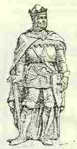
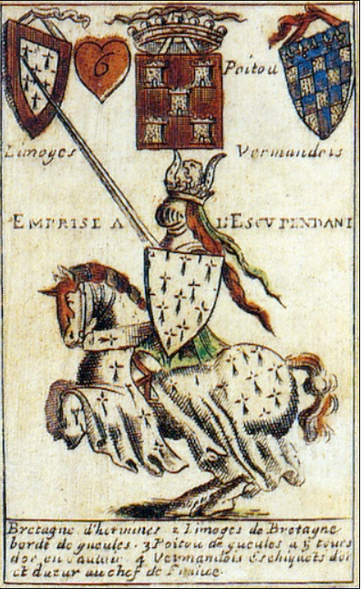

An Erminig
Ton(Mode Hypophrygien)
|
 Charles de Blois (Charlez Ar Bleiz)  Jean (IV) de Montfort - Yann an Tarv Carte à jouer (6 de coeur): cimier à cornes de taureau! Le Livre des tournois du roi René d'Anjou (vers 1483) présente une image semblable. |
5. Gwilhaou penn-toullik a c'hoari, Paourik! war vegig kerniel kriz: Me gave din oa gwell, - Osa, skes skes! Osa, skes skes!- Gwell da zent 'ged e gerniel! 6. Yann ya d'an traoñ, Yann ya d'an nec'h! "Ay-ta! dao! Gwilhaou, war e lerc'h! Difrez vi evitañ, - Osa, skes skes! Osa, skes skes!- Skuizh eo, kamm eo; te zo skañv!" |
Extraits du Deuxième carnet de collecte de La Villemarqué

|
p. 165 / 96
Ar Bleiz 1. An delioù ‘zigor en derv Kent eget digeriñ er faou. . - Ar bleiz a c'hed an tarv . Oh ja, skez! skez! Oh ja, skez ! skez! . (Ma ar bleiz gant an tarv.) . War zek mervel a ray nav! . * . 2. Yann an Tarv ha Gwilhou ar Bleiz . A zo daou gil[hen] war va feiz. . - 'Ma ar bleiz kozh o c'hedal . ('Ma 'r bleiz en aod (er c'hlann) o c'hedal) Oh ja, skez! skez! Oh ja, skez ! skez! . An tarv o tont o neuial. * 3. Mar d'eo kig bevin a glaskes! (Kig fresk hiziv n'az-pezo ket, Kig fresk a renkes da gaouet? Taoliou korn ne lavaran ket!) Bevin fresk c'hwi n'ho- pezo ket) Kig bevin, kar, n'az-pezo ket - Nemet kernioù, hir ha lemm - Oh ja, skez! skez! Oh ja, skez ! skez! . D'az zivouzell', a wel dremm . * 4. Katellig fur an Ervinig A vrizhkan fur en he zoullig,(=to croon) (A c’hoarz leizh he c’halonig, A c’hoarze en he zoullig) p. 166 – Sellit pegen soublig, Oh ja, skez! skez! Oh ja, skez ! skez! . (Ar bleiz) C'hoari (a rae) Guihlou penn-toullig! * 5. Guilhou penn-toullik Gwilhou a c’hoari War begig kernoù al loen kriz. - Me venne ganin Gwilhou Oh ja, skez! skez! Oh ja, skez ! skez! . Oa gwell da zent nag e gornioù! * |
6. Yann ya d’an traoñ ha ya d’an nec’h,
Dao! Hag eo Gwilhou war e lerc’h (8.2 Ar geot glas ken a zec'hjont 8.1 Pelec'h bennak ma 'z ejont.) Difrez [gratuit, sans frais] vi(t) evit evitañ (Mar ne d'out ket evitañ) Oh ja, skez! skez! Oh ja, skez ! skez! . Skuizhet ac'h-eus (dija) ane(zh)añ! * 7. Kavout awalc’h a rin ma zro- (Difresañ a gavin ma zro) (Difrez awalc'h am-bo va zro) Dibres [sans hâte] me hen rezionno - (Ha neuze m 'hen rezionno) (Losk hardi ni hen rezionno) Dao-ta Gwilhou ! – Yannig tec'h! (- Oh dao didao war he lec’h,) Oh ja, skez! skez! Oh ja, skez ! skez! Dao Gwilhaouig, traoñ ha krec’h! -. p. 167 / 97 8. Er prajoù o-deus int treuzet (Dre 'r prajoù deus int tremenet) Deviñ ar geot o-deus int graet, Er prajoù (parkoù),' deus int treuzet, Oh ja, skez! skez! Oh ja, skez ! skez! Na savo na kerc’h nag ed. * 9. Na zavas frouezh el liorzaoù, Skoet ar vleuñiou 'vel gant ar glav (Pikous, pikous vleuñv) (Em c'halon-me) Me garfe e wirionez, Oh ja, skez! skez! Oh ja, skez ! skez! 'N em dagfent ‘n eil egile! Le reste de la page 167 est rédigé avec une autre encre: 4 strophes notées horizontalement et 3 verticalement (1 dans la marge gauche et 2 dans la marge droite). Il s'agit d'un autre chant: "An amzer dremenet" (Le temps passé). Ce texte s'achève par un renvoi: "v. p. 86" (soit p. 157, où commence un autre passage d' "Amzer dremenet"). |
Les pages 168 à 174 (haut) sont consacrées au chant
"Seizenn Eured"
(La ceinture de noces).
La fin de la page 174 ainsi que les pages 175 et 176 portent un texte que l'on retrouve principalement dans "Paotred Pouyeo" (Les jeunes hommes de Plouyé). Une strophe en haut de la page 176 reproduit en partie la 1ère strophe de "An erminig" (L'hermine). A la page 177 / 100 commence un chant inconnu, "Al leur nevez" (L'aire neuve. Dans le Barzhaz de 1845, La Villemarqué a suivi fidèlement son modèle. Les quelques modifications qu'il a apportées sont signalées en gras . La principale est l'ajout du mot "Ar Saoz" (l'Anglais) à la strophe 7. Elle n'a rien de choquant, puisque la strophe 2 vise expressément les Anglais, y compris dans l'original ("aod" et "glann", le rivage; le taureau qui vient "o neuial", en nageant). The rest of page 167 is written in another ink: 4 stanzas noted horizontally and 3 vertically (1 in the left margin and 2 in the right margin). This is another song: "An amzer dremenet" (In olden times). This text ends up with a hint: "see p. 86" (or p. 157, where another passage of "An amzer dremenet" begins). Pages 168 to 174 (top) are devoted to the song "Seizenn Eured" (The wedding belt). The rest of page 174, as well as pages 175 and 176 have a text which is mainly found in "Paotred Pouyeo" (Young men of Plouyé). A stanza at the top of page 176, partly reproduces the 1st stanza of "An erminig" (L'hermine). On page 177 / 100 begins an unknown song, "Al leur nevez" (A New threshing floor dance) In the Barzhaz of 1845, La Villemarqué faithfully followed his model. The few changes he made are marked in bold . The main one is the addition of the word "Ar Saoz" (The Saxon) to stanza 7. It is not shocking, since stanza 2 expressly hints at the English, in the Barzhaz as well as in the original ("aod" and "glann" = the shore; the Bull who comes "o neuial"=swimming). |